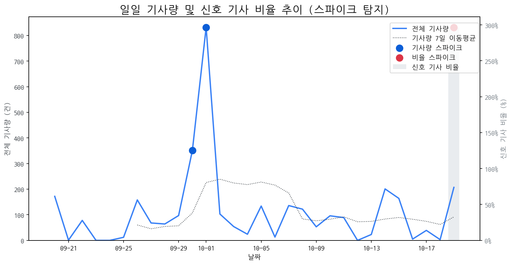

| 날짜 | 기사량 | Z-Score |
|---|---|---|
| 2025-09-30 | 351건 | 2.04 |
| 2025-10-01 | 832건 | 2.1 |
| 날짜 | 비율 | Z-Score |
|---|---|---|
| 2025-10-19 | 296.62% | 2.27 |
| 급등 신호 | 오늘 언급량 | 어제 대비 증가 | 모멘텀(z_like) |
|---|---|---|---|
| qled | 16 | 16 | 5.46 |
| 삼성전자 | 29 | 29 | 4.68 |
| 삼성 | 17 | 16 | 2.74 |
| 아이폰 | 4 | 4 | 1.95 |
| 기아 | 3 | 3 | 1.55 |
| 모멘텀 토픽 | z_like 점수 | 누적 언급량 |
|---|---|---|
| qled | 5.46 | 16 |
| 삼성전자 | 4.68 | 154 |
| 삼성 | 2.74 | 367 |
| 아이폰 | 1.95 | 25 |
| 기아 | 1.55 | 5 |
| 날짜 | 유형 | 제목 |
|---|---|---|
| 2025-10-19 | INVEST,LAUNCH | 中 추월당한 '스마트폰 OLED '⋯ K디스플레이 주도권 위기' |
| 2025-10-19 | INVEST,LAUNCH | OLED 중심 체질 개선 성공한 LGD, 4년 만에 연간 흑자 전망 |
| 2025-10-19 | INVEST | “노트북·모니터 OLED 광풍 분다”…삼성·LGD, OLED 새 활로 찾았다 |
| 2025-10-19 | LAUNCH | 캐논코리아, 고속∙고품질 잉크젯 복합기 'PIXMA TS' 시리즈 출시 |
| 2025-10-19 | LAUNCH,REGUL | LGD, 체질 개선·조직 효율화에 4년만 연간 흑자 전환 눈앞 |
| 제목 |
|---|
| 10월 3주 주요 제조업 전망 |
| [미쓰비시 전기차 수탁 생산하는 애플 파트너 홍하이 |
| 삼성, 中 TV업체 ‘가짜 QLED ’ 저격…직접 만든 풍자 영상 화제 |